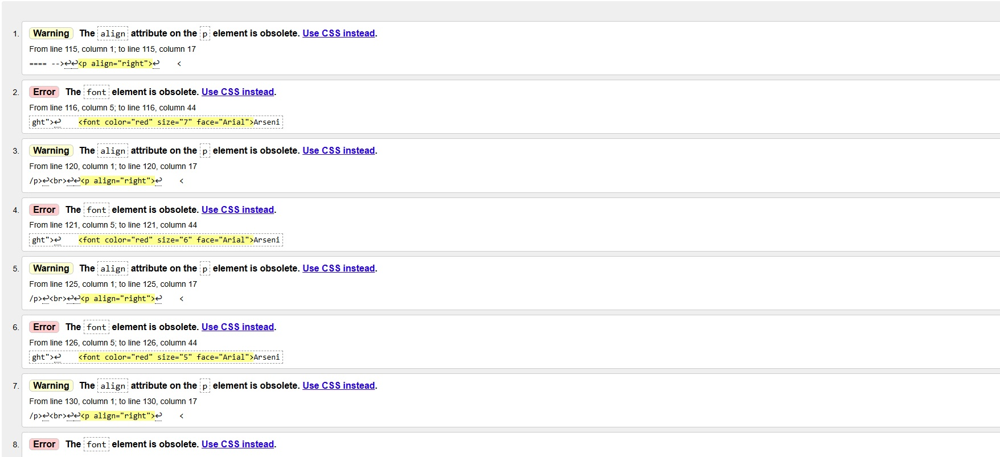
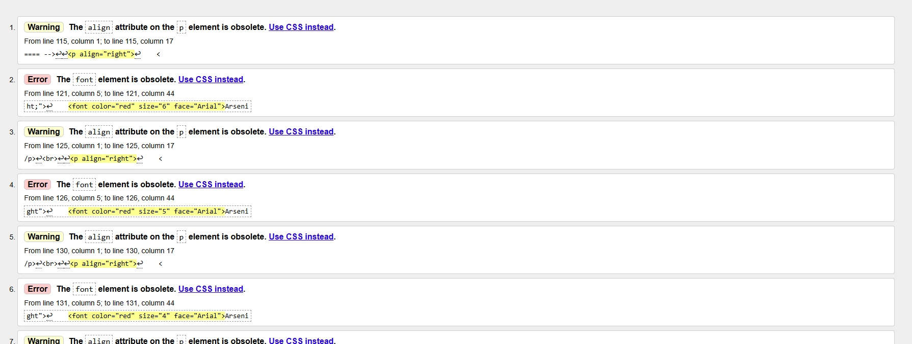

Walidacja strony HTML to proces sprawdzania poprawności kodu HTML pod kątem zgodności z obowiązującymi standardami, w celu wykrycia błędów i nieprawidłowości w strukturze dokumentu.
Walidator HTML to narzędzie, które sprawdza poprawność kodu HTML pod względem zgodności ze standardami i wskazuje znalezione błędy oraz nieprawidłowości w kodzie strony internetowej. Walidatory są najczęściej w postaci strony WWW.
W3C (World Wide Web Consortium) to międzynarodowe konsorcjum zajmujące się opracowywaniem standardów dla stron internetowych. Jego zadaniem jest tworzenie i wytyczanie standardów. Dzięki temu strony i aplikacje internetowe działają poprawnie, były dostępne i zgodne z ustalonymi standardami.
Strona została sprawdzona za pomocą walidatora W3C. Podczas sprawdzania wykryto błędy i ostrzeżenia dotyczące kodu HTML.
HTML5 to standard języka HTML służący do tworzenia stron internetowych.